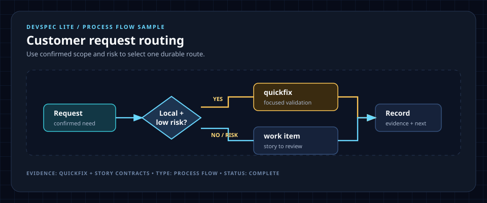

DEVSPEC LITE / PROCESS FLOW SAMPLE
Customer request routing
HTML adds a responsive presentation shell around the standalone, evidence-backed SVG.

HTML adds a responsive presentation shell around the standalone, evidence-backed SVG.
